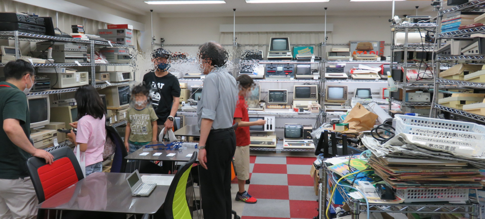
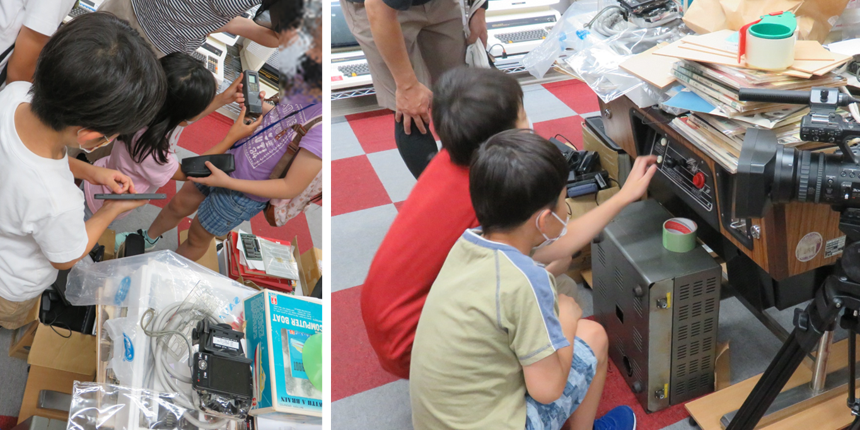
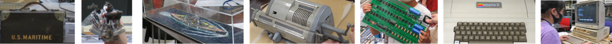
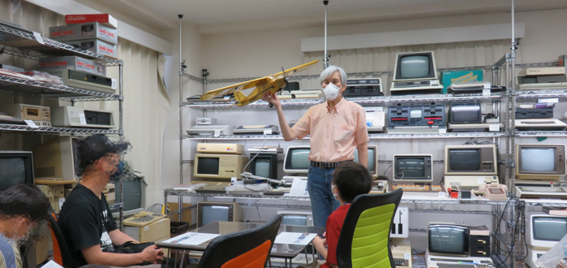
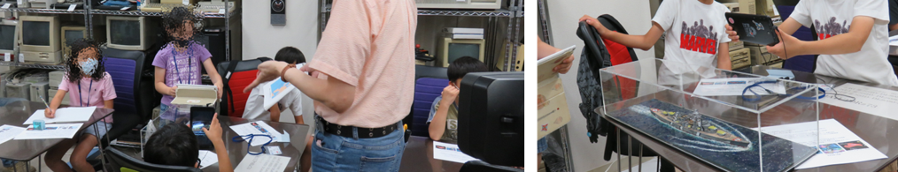
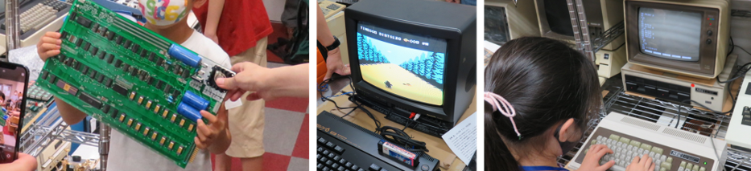
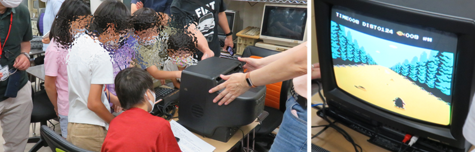
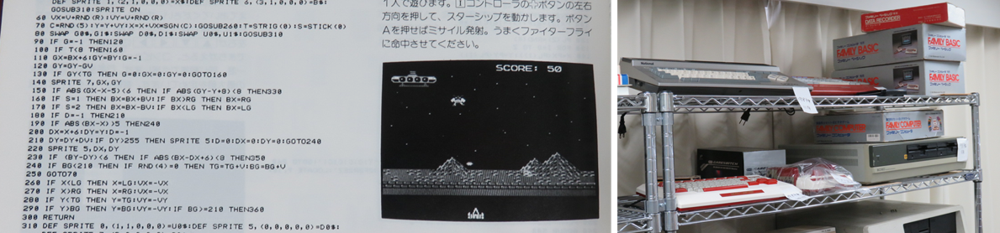
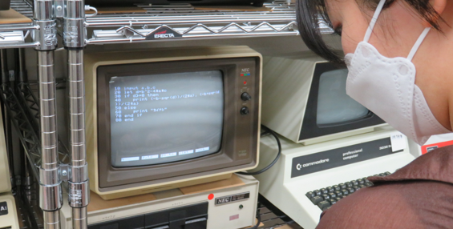

2022年7月2日「月刊アスキー」の元編集長であり、現在は青梅市の「マイコン博物館ほか」館長の 吉崎 武 さんが講師を務める100年間のコンピュータの進歩を学ぶ臨時CoderDojo青梅を開催しました。
100年前のコンピュータって何だ？Windowsよりももっと昔の、お父さんお母さんが小学生だった頃のパソコンを探しに行こう！講師は「月刊アスキー」の編集長を務め、現在は青梅市の「夢の図書館・コンピュータ博物館」館長である 吉崎 武 さんが、ソロバン、計算尺、手回し計算機から2000年のiMacまでの100年間のコンピュータの進歩を約1時間で解説します。🔭単なる昔話ではなく、これから皆さんが技術分野で活躍するための重要なヒントを学べます。

子どもたちは、会場に入るとすぐに館内の棚にあるコンピュータに釘付け。古いマイコンのキーボード操作感触、ちょっと前のパームトップ型機材の基盤、テーブルゲームのレバーなど、少し目の付け所が違うようです。それが楽しい。

きっと終わらない30分間の探検を切り上げて、本日のセミナーを開催
まだコンピュータが無かった大航海時代の天体観測（六分儀）から入って、第二次大戦での弾道計算や無線通信の暗号解読にて手動計算では大変なので機械(道具)で計算する手段を考えるようになった。そこに登場する最初の手回し計算機、そして電気で計算するマイコンへと移り、そのマイコン実機を見ていく。

詳しくは次の機会で実際に聴講して欲しいのですが、なぜ館長さんがエンジニアになっていくのか、そしてなぜ図書館や博物館を運営することになったのか、ビルゲイツ氏やスティーブ・ジョブズ氏に日本で案内した思い出話もはさみつつ、エンジニアの原点や経緯について子どもたちに知ってほしいこと、大人のみんなにも振り返ってほしい内容を講演してくださいました。

館内の展示物や普段は展示していない秘蔵品などの撮影は自由、セミナーの内容もメモを取って自由研究の報告作りは大丈夫だね。今年の夏は31日に追われることなくいっぱい遊ぼう。ドイツ軍の軍艦ビスマルクの模型（↓）は、イギリス海軍との戦争で情報・無線・暗号から大勢の人がとてつもない時間をかけても解けない暗号解読に迫るお話（模型は松竹ウルトラマンの関係者による制作）。この過程で「計算手」という言葉を聞いた。コンピュータが存在しない時代に、数人から数百人のチームで計算を行う手法。他にも、宇宙に行く話やIBM企業など、たくさんの逸話・エピソードを紹介いただきました。コンピュータが必要になった理由や大企業が生まれた経緯など大人でもとても勉強になりました。

Apple社が最初に開発したマイコン「Apple I（アップル ワン）」との記念撮影。このApple Iはカリフォルニア州のコンピュータ歴史博物館に展示されているモノと同じ超貴重品!! そして、なんとっ！マイコンの電源をONに！ MSXをブラウン管テレビに接続するレトロ加減！ 大人がショックだったのは BASIC言語 すら既に歴史の一部だったこと。

MSXのゲームソフトは「夢大陸アドベンチャー」です。交代しながら昭和のゲームにも接することが出来ました。青梅市では「昭和レトロ商品博物館など観光にもおすすめです」。あ、夢の図書館・コンピュータ博物館も昭和レトロ観光コースに追加すべきですね。

CoderDojo青梅を主宰する私も小学６年生のときにファミリーベーシックに触れたことがきっかけで現在ITエンジニアをやっています。同梱の取扱説明書に記載されているサンプルプログラムを読みながら、慣れないキーボードできっと何時間もかけてプログラムを入力していたんだと思います。入力が終わって実行コマンド[run]を押すと何が起こるのかをワクワクしながら。

そして今日、（大学生も混じって）こどもたちが初めてのBASICプログラムをPC-8001, PC-9801で打ち込んでいる姿をみて自分の子供時代を思い出しました。

夢中だったので、みんな集合の記念撮影をするのを忘れていました。12:00に終了の予定で流れ解散にしたのですが、その後も子どもたちの興味は尽きず、ずー－－－－っとBASICプログラム入力を体験していました。CoderDojoメンバーが退出した13:30以降も、ずー－－－－っと続きをやっていたようです。何時までいたのか、後で聞いてみますね。